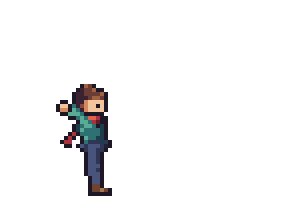
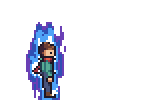
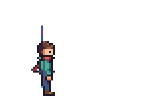

Pixel art and sprite tools for AI agents: Pixelbolt, aseprite-mcp, pixel-mcp, pixscii, pixelart-mcp, pixelforge-mcp and SpriteCook compared
Which pixel art and sprite tools can an AI agent call over MCP? We compare seven, checked on 11 November 2026 (the effects section and SpriteCook's prices on 13 November) by the makers of Pixelbolt: aseprite-mcp and pixel-mcp drive the paid Aseprite editor, SpriteCook and pixelforge-mcp generate images with hosted AI models, pixscii and pixelart-mcp draw on canvases on your machine, and Pixelbolt renders editable JSON recipes on your machine with no paid app, account, API key or image model. We read the other six from their code and docs without running them, and measured Pixelbolt 0.15.0, as installed from npm, on one Windows machine: all 10 of its plain example recipes rendered twice to byte-identical files, all 91 of its example effect, simulation, pose, tile-set and normal-map sources compiled twice to identical recipes, and a one-pixel fix over MCP changed exactly 1 pixel in 1 of 6 frames when we decoded the frames before and after. Method, sources, data and the other servers we found are below.
We make Pixelbolt. Read this as a vendor's page: our own numbers come from runs you can
repeat, and everything about the other tools links to where we read it. Pixelbolt was called PixelForge before version
0.8.0; it still answers to the old pixelforge command, and its file formats keep pixelforge-*
names. None of that is related to the npm package pixelforge-mcp
(freema/pixelforge-mcp, compared below) or to the other GitHub
repositories called pixelforge-mcp. If we got something wrong,
open an issue and we will correct it.
The short answer
- You want game sprites your agent can draw, check and revise as text, from Claude Code, Codex, Cursor or Claude Desktop, with the same files on every run: Pixelbolt. Sprite sheets, atlas JSON, APNG, GIF and Godot and Tiled files come from one recipe, effects and simulations (fire, water, falling sand, rigid bodies) compile into frames, and the agent can fix one pixel or one frame without redrawing the rest. You or the agent still design the art; it doesn't generate art from a prompt.
- You already use Aseprite and want the agent to work in
.asepritefiles: aseprite-mcp (969 GitHub stars, 123 tools in its source) or pixel-mcp (a Go binary with 50 tools; no commits since October 2025). Both need Aseprite, which costs US$19.99 on Steam or can be compiled from its source for personal use. - You want finished art from a text prompt: SpriteCook (hosted, with credits and a free plan of 40 credits every 30 days) or pixelforge-mcp (runs on your machine and generates through Google's Gemini API with your own key). Both use generative models, pixelforge-mcp has no seed option, and neither has tools to edit single pixels.
- You get sprites from a hosted generator and want hits, auras or dissolves on them: PixelLab and Retro Diffusion document an effects tool; SpriteCook shows an animated explosion on its PixelLab comparison page but lists no effects tool; Sprite AI and SpriteFuse document no effects on the home, pricing and MCP pages we read. Pixelbolt draws effects on a generator's PNG sprite sheet on your machine (the steps and what we measured).
- You want 16-colour sprites, one-call animated scenes, and characters, creatures and landscapes generated
from a seed, ready in one
npx: pixscii. - You want a Python server that edits PNG files in place, with rig-based walk cycles: pixelart-mcp. It has no licence file, so ask its author before you use it in a product.
Side by side
Pixelbolt's column is measured or taken from its own docs. The other columns are from each project's README, docs and source at the commit named under Sources, or from its own web pages, read on 11 November 2026, not run by us. Tool counts for the others are counted in their source.
| Pixelbolt | aseprite-mcp | pixel-mcp | pixscii | pixelart-mcp | pixelforge-mcp | SpriteCook | |
|---|---|---|---|---|---|---|---|
| How the art is made | Rendered on your CPU from a JSON recipe (palettes, text grids, reusable symbols and drawing operations), or compiled into one from pose, tile-set, particle, fluid, falling-sand, rigid-body, crystal, wave or normal-map sources | Drives Aseprite in batch mode, one Lua script per call | Drives Aseprite in batch mode, one Lua script per call | Drawing on in-memory 16-colour canvases with pixel and shape tools, plus a bundled sprite library and procedural characters, creatures and landscapes from a seed | Drawing on PNG files on disk with Pillow | Generated by Google Gemini image models, then cropped and split locally | Generated by third-party AI models (its terms name OpenAI, Google Gemini and xAI) through SpriteCook's hosted service |
| What you need | Node.js 20+ (npx), the Claude Code plugin, the MCPB bundle for Claude Desktop or a clone; or a portable Studio build that brings its own Node |
Aseprite, Python 3.13+ and uv | Aseprite 1.3+, and Go to build it or a prebuilt release | Node.js 18.17+ (npx -y pixscii) |
Python 3.11+, uv and a clone (not on PyPI) | Node.js 20+ and a Gemini API key | A SpriteCook account, and an API key or OAuth sign-in |
| Cost | Free | Free, plus Aseprite (US$19.99 on Steam) | Free, plus Aseprite | Free | Free to download; no licence file | Free, plus your Gemini API usage (price not checked) | Free plan: 40 credits every 30 days, and free generations appear in its public gallery. Paid: from US$12 a month (excl. VAT) for 1,000 credits (US$8 for 800 on 11 November). An image costs 8 to 12 credits (12 with its default model), an animation 20 to 26; higher resolutions and some models cost more |
| MCP tools | 8 (counted from tools/list) |
123 (its README's headline says the same) | 50 (README tables list 48) | 25 | 39 | 8 (its README documents all 8) | 31 (its server card) |
| Animation | Frames with durations, named animations, poses with walk, run, jump and other templates, particle effects, and simulations baked into frames: fluids, rigid bodies with joints, ropes and cloth, falling sand, crystal growth and waves | Frames, cels, tags, per-frame durations, tweening with easing | Frames, durations, tags with a playback direction | Six preset motions, and one-call scenes with up to 8 moving characters over a background (a colour, a sprite or a tilemap); up to 32 frames | Rig-based motions (walk, run, idle and others), looping GIFs with per-frame durations | A number of frames, each generated separately with the first as a reference by default, or one generated sheet split into PNGs; no timing | Turns an image into a short looping cycle |
| Exports | PNG sprite sheet, atlas JSON, Godot 4 SpriteFrames and TileSet (.tres), a Tiled tileset (.tsx), single PNGs, APNG, GIF, CSS, a Canvas player, numbered frames for a video editor; scenes also as a Tiled .tmx and a Godot .tscn with parallax planes |
PNG, GIF, JPG; sprite sheets with JSON data; .aseprite |
PNG, GIF, JPG, BMP; sprite sheets with JSON metadata; .aseprite |
PNG only, returned to the agent; its MCP tools write no files | PNG, GIF, sprite sheet grids | PNG files | PNG and ZIP downloads; Unity, Godot, Phaser and sprite sheet exports on paid plans |
| What the agent sees | A PNG contact sheet of every frame, a before-and-after image of each patch, palette-key text grids on request, and an inline player in hosts that support MCP Apps | Images in the MCP reply (view_sprite: zoomed frames with a pixel grid and coordinate rulers); pixels as JSON or as rows of characters |
No image; pixels as a paginated colour list | PNG images; pixels as a hex grid | Canvas images; pixels as a labelled character grid | A JSON list of the files written; no image | Not checked (closed server) |
| Fix one pixel of an existing asset | Yes, pixel_patch. In our run on 0.15.0, the decoded frames showed 1 changed pixel in 1 of 6 frames, as its reply said |
Yes, in an .aseprite file |
Yes, in a sprite file | Only on canvases it holds in memory; no tool loads a PNG from disk as it is | Yes, in a PNG on disk | No pixel tools | No pixel tools in its server card |
| Same input, same output | Measured on 0.15.0: 10 of 10 example recipes in the npm package (21 of 21 with the release tag's quality set) rendered twice to identical files, and 91 of 91 example sources (fluids, effects, rigid bodies, falling sand and more) compiled twice to identical recipes, on one machine | No claim found | No claim found | Claimed in its README, and its tests check that a seed repeats; not run by us | Claimed in its README and code; not run by us | Not expected: a generative model with no seed option (not run by us) | No claim found |
| Size limits | An animation frame up to 256×256 (a single still up to 4,096 a side); a project up to 256 frames and 4,194,304 pixels | None in its code (Aseprite's own limits apply) | Up to 65,535 pixels a side | 256×256, 16 colours, 32 frames | Up to 1,024 pixels a side, 256 frames | Sprites, frames, tiles and items downscaled to a standard size from 16 to 128 pixels (48 by default, tiles 32; 0 keeps full size); backgrounds and thumbnails stay at the model's size | Not checked |
| Network and files | The MCP server makes no network calls. It reads asset files only under its root folder (--root: the
working directory by default; in the Claude Desktop bundle, the workspace you choose, which defaults to your home
folder) and writes under --out, or, with saveAs, PNG, GIF, JSON, .tres and .tsx
copies at paths inside the root that the agent names (never under a name that starts with a dot, in the home folder's
AppData or Library unless the root itself is there, or over a file the recipe uses; it replaces an existing file only when the agent passes
overwrite, and a JSON, .tres or .tsx file only if it holds sprite or tile
data). The studio listens on your own machine only |
No outbound calls found; run_lua_script runs any Lua on your machine, and its preview web server listens on all network interfaces |
No network code found | Its convert tool downloads any public web address the agent gives it |
No network code found; reads and writes any path your account can reach | Sends prompts and reference images to Google's Gemini API | Runs on SpriteCook's servers and its model providers' |
| Licence · stars · latest release | MIT · 80 · 0.15.0, 10 Nov 2026 (npm and GitHub) | MIT · 969 · no releases; last commit 3 Nov 2026 | MIT · 160 · 0.5.0, 18 Oct 2025 | MIT · 3 · npm 0.5.0, 28 Oct 2026 | No licence file · 8 · no releases; last commit 10 Oct 2026 | MIT · 6 · npm 0.3.0, 6 Nov 2026 | Closed hosted server · not applicable (its setup tool's repository has 6) · setup tool 0.2.17 |
What we measured on Pixelbolt
On 11 November 2026, on one machine: Windows 11 Pro (build 26200), Node.js 24.19.0, an AMD Ryzen 9 7950X3D, no GPU
work. We measured Pixelbolt 0.15.0 as users install it: npm pack pixelbolt@0.15.0, unpacked into a fresh
folder. All 211 of its files, package.json included, matched the v0.15.0 tag (commit
1b9cf2b) byte for byte, and we ran the test suite from that tag. The JSON data files record the version,
Node, OS build and CPU.
- Tests:
node --testpassed 1,264 of 1,264 tests in 137.6 s (output). - MCP tools: the server answered
tools/listwith 8 tools:pixel_help,pixel_validate,pixel_inspect,pixel_patch,pixel_render,pixel_compile,pixel_sceneandpixel_import. Itstools/listresult is 19,754 bytes of JSON. - Which clients see the tools: Pixelbolt speaks the 2025 MCP handshake (
initialize), not yet the stateless one of the 2026-07-28 specification (server/discover). Claude Code 2.1.322 sent the new handshake first, got "Initialize the server first", fell back toinitializeand listed all 8 tools. The official TypeScript SDK's v2 client (2.4.0) also listed all 8 in its default andautomodes, as did its v1 client (1.32.2). A v2 client pinned to 2026-07-28, which by design has no fallback, listed none (results). - A round trip over MCP on the 24×24, 6-frame coin example, run twice: validate, the first call,
took 110 and 95 ms, inspect 7 ms (it returned a PNG contact sheet), patch 8 ms and render 27 ms both times. The patch
painted one pixel, and its reply listed exactly that pixel (frame
turn-0, x 12, y 12, from theshadecolour tolight) with the other five frames unchanged, plus a before-and-after image. To check the reply, the script rendered the revisions before and after the patch and decoded every frame PNG with its own PNG reader: frameturn-0differed in exactly that pixel (#c78a43to#ffe4a0), and the other five frames in none. The render wrote 15 files: the sprite sheet, atlas JSON, a Godot 4.tres, the recipe, CSS, six frame PNGs, an animated PNG, a Canvas player, a preview page and a README (run 1, run 2). - Same recipe, same bytes: every plain recipe in the npm package's
examples/folder and its subfolders (10), meaning recipes with frames rather than the sources that compile into them, was rendered twice through the command line into fresh folders, and every output file matched its twin by SHA-256 (11 to 73 files per recipe; 131 to 217 ms per render, with Node's start-up and the file writes). The release tag also holds the 11 recipes inexamples/quality/, which the npm package no longer ships; run from the tag, all 21 matched. All 91 example sources compiled twice to identical recipes: 37 fluids, 20 particle effects, 12 rigid-body scenes, 7 pose sets, 5 falling-sand scenes, 4 crystals, 3 tile sets, 2 waves and 1 normal map, in 0.13 to 7.7 s each (npm package, tag). We checked one machine only. Pixelbolt's own CI runs its tests on other systems. On one job, which tests its build for Intel Macs (darwin-x64) under Rosetta on an Apple silicon runner, two tests have found a preset differing from the same preset compiled directly: blade-bloom on 9 November and hot-stone on 11 November, both on pull requests that changed only docs. It doesn't happen on every run, its cause is still open, and the other 11 jobs passed both times. So we claim the same bytes only on the machine we measured. - Footprint: no runtime dependencies. The Claude Desktop bundle (
pixelbolt.mcpb, release 0.15.0) is 1,089,924 bytes.
To repeat it, with Node.js 20 or newer:
npm pack pixelbolt@0.15.0 tar -xzf pixelbolt-0.15.0.tgz node package/bin/pixelbolt.js render package/examples/coin.json --out out-a node package/bin/pixelbolt.js render package/examples/coin.json --out out-b git clone --branch v0.15.0 https://github.com/skulitom/Pixelbolt cd Pixelbolt node --test
Then compare the two output folders. Our scripts do the same for every plain recipe and example source,
and drive the MCP round trip:
pixelbolt-determinism-v2.mjs and
pixelbolt-probe.mjs, each run as
node <script> <clone or unpacked package> <fresh folder> <result.json>. The client
check used the SDK packages named above (script, which names its paths at
the top), and Claude Code with its model calls pointed at a closed local port, so nothing left the machine; the results
file holds the first lines Claude Code and Pixelbolt exchanged.
On 29 October we measured 0.9.2 the same way: 648 of 648 tests in 23.9 s; the same 8 tools, with a
tools/list result of 15,887 bytes; validate 74 and 64 ms, inspect 11 ms, patch 9 ms and render 56 and 42
ms, with the same 15 files; 19 plain recipes identical (10 to 70 files, 101 to 173 ms) and 17 fluid presets identical;
a 438,203-byte bundle (tests,
run 1,
run 2,
determinism,
its script).
On 17 October we measured main at a2420d5 and the 0.8.0 release the same way:
237 of 237 tests in 11.3 s; the same 8 tools, with a tools/list result of 135,519 bytes on
main and 134,532 on 0.8.0, mostly because four tools then carried the full recipe JSON Schema; validate 7
ms, inspect 9 ms, patch 8 ms and render 37 ms, with 14 files; the same 19 recipes identical (9 to 69 files, 75 to 142
ms) and 10 fluid presets identical; a 225 KB bundle
(tests,
main,
0.8.0,
determinism).
Each tool, and when to choose it over Pixelbolt
aseprite-mcp
diivi/aseprite-mcp is a Python server that runs Aseprite in batch
mode with a Lua script for each call. Its source registers 123 tools (its README's headline now says the same) across drawing, layers,
frames and tags, tweening, palettes, tilemaps, slices, text and effects, and it reads and writes native
.aseprite files. Its README has the agent check each pass with view_sprite, which returns
the picture inside the MCP reply (zoomed, with a pixel grid and coordinate rulers, up to 16 frames a call, optionally cropped to one region), and
with lint_sprite for stray and detached pixels; it reads pixels back as JSON, or as rows of characters that
draw_rows takes back. It has no releases; its latest commit, from 3 November 2026, stops an Aseprite run after 60 seconds by default. Two tools need care: run_lua_script runs any Lua code on your machine
(its README says so), and start_preview_server starts Python's web server without binding it to your own
machine only.
Choose it when you own Aseprite and want the agent to work in the same .aseprite files
you open by hand, or when you want Aseprite's own tools, from layers and tilemaps to text. Choose
Pixelbolt when you don't want a paid editor in the loop, or want byte-for-byte repeatability you can check
(we measured ours).
pixel-mcp
willibrandon/pixel-mcp is a Go server, also built on Aseprite in batch mode, with 50 tools in its source (its README tables list 48): canvas, layers, frames and tags, drawing, selection, palettes, and its own dithering patterns, palette quantization, auto-shading and antialiasing, plus export to PNG, GIF, JPG, BMP and sprite sheets with JSON metadata. It reads pixels back as a colour list and returns no image to the agent. Its latest release, 0.5.0, came out on 18 October 2025, and it has had no commits since.
Choose it for a single Go binary in front of Aseprite, with its own dithering, quantization, auto-shading and antialiasing tools. Choose Pixelbolt for active development, no paid editor, and a picture the agent can look at after each step.
pixscii
rxolve/pixscii (npm pixscii) keeps canvases of up to
256×256 in memory as 16-colour hex grids, with 13 bundled 16-colour palettes (PICO-8, greyscale, Game Boy and 10 scene
moods that share 16 named slots, so one drawing can be recoloured for another mood), a library of bundled sprites and
procedural characters. Its 25 tools draw pixels and shapes (with dithered fills), mirror, generate landscapes, creatures
and beings from a seed, recolour by palette, compose tilemaps and sprite sheets, animate with six preset motions, and
build an animated scene with up to 8 moving characters over a background (a colour, a sprite or a tilemap) in one
call. Results come back as
PNG images in the agent's reply, and its MCP tools write no files. Its README calls it offline and deterministic; its
landscapes and creatures come from a seeded generator, and its own tests check that a seed repeats (not run by us). Its
convert tool downloads any public web address the agent gives it. Its npm package, 0.5.0 (28 October
2026), was built from the repository's latest commit.
Choose it for a one-command start (npx -y pixscii), 16-colour sprites, one-call
animated scenes, characters, creatures and landscapes generated from a seed, art recoloured across its mood palettes,
or when a bundled sprite library is enough. Choose Pixelbolt for your own palettes
beyond 16 colours, animations longer than 32 frames (up to 256), files on disk (sheets, atlases, APNG, GIF) and recipes
you can edit later.
pixelart-mcp
light-vp/pixelart-mcp is a Python server that edits ordinary PNG files on disk with Pillow. It has 39 tools, among them rig-based motions (walk, run, idle and others), onion and filmstrip views, an image of the canvas for the agent and a labelled character grid of its pixels, and export to GIF and sprite sheet grids. Its code says the same inputs give the same pixels. It has no licence file and isn't on PyPI, and it reads and writes any path your account can reach.
Choose it for a Python stack, editing existing PNGs in place, or rig-based walk cycles, once its author has granted a licence that suits you. Choose Pixelbolt for an MIT licence, atlases and APNG, and a recipe you can edit later rather than only pixels.
pixelforge-mcp (freema)
freema/pixelforge-mcp (npm pixelforge-mcp, 0.3.0)
asks Google Gemini image models for sprites, animation frames, backgrounds, thumbnails, tilesets and item kits. It then
crops and splits the results locally and downscales sprites, frames, tiles and items to 16 to 128 pixels (or keeps them
full size); backgrounds and thumbnails are saved as generated. It needs a Gemini API key, which its code sends to
Google with each request, and reference images you give it are uploaded to Google. It has no single-pixel tools and
returns a list of files rather than an image. It is a different project from Pixelbolt, which was called PixelForge
before 0.8.0.
Choose it when you want art from a prompt, in your own Gemini account, and can accept a different result each time. Choose Pixelbolt when the art must be exact, repeatable and editable, or must not leave your machine.
SpriteCook
SpriteCook is a hosted service whose MCP server runs on its own servers, reached with an API key or an OAuth sign-in; its public repository holds only a setup tool. Its terms say it uses third-party model providers, naming OpenAI, Google Gemini and xAI. Its server card lists 31 tools for game art, characters and their animations, tilesets (with a Godot export tool), UI kits, sprite rotation and slicing, projects, collections and credits. Pricing, read on 13 November 2026: a free plan with 40 credits every 30 days and no card, whose generations appear in a public gallery; then from US$12 a month (excl. VAT) for 1,000 credits. It was US$8 for 800 credits when we read it on 11 November; its FAQ now says subscribers keep the price they signed up with, for example "Starter at $8 for 800 credits a month". SpriteCook documents no effects tool on the pages we read, though its comparison with PixelLab shows an animated explosion captioned "Effects and props, not just characters" (see effects on AI-generated sprites). An image costs 8 to 12 credits (12 with its default model), an animation 20 to 26, and its pricing page says higher resolutions and some models cost more. It lists engine exports (Unity, Godot, Phaser) and private assets as paid-plan features.
Choose it when you want finished, consistent art from prompts, characters with animation sets and UI kits, and are happy to pay per image. Choose Pixelbolt when you want no account or credits, art that stays on your machine, and the same files on every run.
Adding effects to AI-generated sprites: SpriteCook, Retro Diffusion, PixelLab, Sprite AI and SpriteFuse
Of the five hosted AI sprite generators with MCP servers that this page covers, two document an effects tool on
their own pages, read on 13 November 2026: PixelLab's VFX generator makes fire, explosions, spells and slashes "timed
to your own character", and Retro Diffusion has an rd_animation__vfx style (24 to 96 pixels, square
only). SpriteCook lists no effects tool but shows an animated explosion on one of its pages; Sprite AI and SpriteFuse
list no effects on the pages we read. Pixelbolt 0.16.0 adds effects to a sprite sheet exported as PNG, on your own
machine: we imported a 5-frame, 18-colour strip and drew a sword hit, a power-up aura and a teleport-out on it with
one effects file and six commands, none over 0.3 s on our PC. Of the knight's 1,840 pixels over the hit's 9 frames,
the 1,719 that the effect doesn't cover came through unchanged, and the 63 files two clean runs wrote were
byte-identical.
We didn't run the five generators. Each is a hosted service that needs an account, and we don't sign up
for the tools we compare, so their rows come from their own pages, linked under
Sources. The five are the generators this page already covered or named
(SpriteCook, Sprite AI and PixelLab) and two that its earlier searches turned up (Retro Diffusion and SpriteFuse). Our
stand-in for a generator's output is Pixelbolt's own example character
(examples/hero.poses.json), rendered to plain PNG strips and imported back as pixels: Pixelbolt saw only
the PNG, as it would see a generator's export. A generator's art will usually have more colours than this one; see
the limits below.



Shown at 4× (the frames are 72×52 pixels), straight from pixelbolt render --gif-scale 4.
What each generator documents today
| Generator | What it makes | Effects | MCP server and access | Price, as listed on 13 November 2026 |
|---|---|---|---|---|
| SpriteCook | Sprites, characters, items, tilesets and UI kits; idle, walk, run and attack animations | No effects tool found on its home page, pricing page, MCP README or 31-tool server card. Its comparison with PixelLab shows an animated explosion captioned "Effects and props, not just characters" | Hosted; API key or OAuth sign-in | Free: 40 credits every 30 days. Paid from US$12 a month (excl. VAT) for 1,000 credits |
| Retro Diffusion | Characters, items, tilesets, scenes, UI, icons and animations | Yes: the rd_animation__vfx style, 24 to 96 pixels and square only, with an explosion as its
example; through its API and MCP server only |
Hosted; API key | Pay as you go, no subscription; US$0.07 a request (its rd_animation price); US$0.50 of free balance for a new account |
| PixelLab | Characters in 4 or 8 directions, animations, tilesets, maps, UI and effects | Yes: a VFX generator for "fire, explosions, spells and slashes, timed to your own character",
and the MCP tool vfx_workbench |
Hosted; API token | Free generations (with its "Lite" artist); the MCP VFX tool is "Free for subscribers". Its plan prices didn't load for us |
| Sprite AI (sprite-ai.art) | Characters, items, creatures, structures and vehicles; walk, attack and idle animations of 4 to 16 frames | None found on its home, pricing or MCP pages | Hosted; API key; 13 tools | 15 free generations; paid from US$8 a month for 100 tokens |
| SpriteFuse | Animated character sprite sheets, characters and terrain tilesets | No effects feature found; a spell appears only as a character's move, such as "Raises the staff to charge a fireball overhead" | Hosted; OAuth with an account; 11 tools | 20 free credits for a new account (its home page); a US$9 pack, or US$10 a month |
| Pixelbolt 0.16.0 | Whatever you or your agent write as recipes: sprites, effects, simulations | Yes, measured below: effects compiled from a JSON file, drawn on your sprite or alone | Runs on your machine (npm, MIT licence); no account or key | Free |
"None found" and "no effects tool found" mean only that it isn't on the pages we name under Sources, not that the tool can't do it. The same searches found other hosted generators that, by the search tool's summaries, advertise effects with MCP access (Ludo.ai, SpriteCanvas and Voidless); we didn't read their pages, so they aren't in the table. Also there, not compared here: Sprite Fusion's open-source effects (a different product from SpriteFuse) and pixelfx's code-drawn effects (search record).
The steps, in Claude Code or any shell
With Node.js 20 or newer and Pixelbolt from npm (npm install -g pixelbolt@0.16.0, or put
npx -y pixelbolt@0.16.0 where the commands say pixelbolt). Claude Code runs the same commands
in its terminal. Pixelbolt's MCP server offers the same steps as pixel_import, pixel_compile
and pixel_render, which we didn't run for this section. Put the two PNGs in an input folder
next to knight-effects.fx.json and add_animation.py, and run everything from that folder;
on Windows, python may be py.
- Export the animation from the generator as a PNG sprite sheet at its pixel size (one image pixel per art pixel),
with the frames on a regular grid. Retro Diffusion, for one, returns animations as GIF unless asked for a PNG sheet
(
return_spritesheet: true), and Pixelbolt imports PNG only. Ours: knight-attack.png, 5 frames of 32×36 in a row, and knight-idle.png, 4 frames. - Import each strip as a recipe, keeping every pixel and colour:
pixelbolt import input/knight-attack.png --frame 32x36 --name knight-attack --out input/knight-attack.json pixelbolt import input/knight-idle.png --frame 32x36 --name knight-idle --out input/knight-idle.json - Name each recipe's frames as one animation, because the import writes frames only (
truemakes the idle a loop):
(add_animation.py is a 15-line script; your agent can add thepython add_animation.py input/knight-attack.json attack false python add_animation.py input/knight-idle.json idle trueanimationsentry by hand instead). - Write an effects file that uses the sprite: ours is
knight-effects.fx.json. An emitter with
"sprite": {"symbol": "knight-attack", "draw": true}and"behind": truedraws your character frame by frame, under the effect;slash,starandringlayers and a burst of sparks make the hit; anauralayer follows the sprite's outline; and an emitter withreleasebreaks the sprite into particles. Leave the sprite emitter out and you get the effect alone, to draw over the sprite in your game: drawn over the imported frames, ours gave the combined hit's frames exactly (9 of 9). Keep the sprite emitter after the spark emitter, as ours is: in our first version it came first, and the sparks fell differently in the effect alone. - Compile and render:
You get a sprite sheet with an atlas (frame rectangles, durations, pivot and animations), a Godot 4 SpriteFrames file, single frames and the GIFs above.pixelbolt compile knight-effects.fx.json --out knight-effects.json pixelbolt render knight-effects.json --out out --gif-scale 4


What we measured
- Pixelbolt 0.16.0 from npm (built from tag
v0.16.0at44d85b6), Node.js 24.19.0, Windows 11, 13 November 2026. measure.py ran the six commands twice, each time in a new folder holding only the two PNGs, the effects file and add_animation.py (results). To repeat it, with Pillow installed, from a folder laid out as in the steps, withmeasure.pysaved there too:python -I measure.py <pixelbolt folder>/bin/pixelbolt.js . results.json(after a global install, the folder is$(npm root -g)/pixelbolt). - Repeatable: all 63 files the runs wrote (3 recipes, 44 frames, 4 APNGs, 4 GIFs, the sheet and its atlas, the Godot and Pixelbolt metadata files, and the bundle's README, CSS, player script and preview page) were byte-identical between the two runs. The four input files are not counted.
- Time per step, on our PC: each import 140 to 142 ms, each
add_animation.py79 to 86 ms, the compile 248 ms and the render 240 to 241 ms; about 0.94 s for all six commands. - The sprite stays itself: in each of the hit's 9 frames we compared every pixel of the imported frame (the 5th held after the attack ends) with the output. Of 1,840 sprite pixels, 1,719 were unchanged; the other 121, in the 2nd to 5th frames, are where the slash passes in front of him, and each shows the effect's own pixel. No sprite pixel changed anywhere else.
- The effect alone matches: outside the sprite, the hit and the effect-only version are identical in all 9 frames, and the effect alone drawn over the imported frames gives the hit's frames exactly (9 of 9).
- Colours: the strip has 18, and the hit adds 6 of its own, for 24.
When to use a generator's effects instead
- PixelLab when you want an effect made from a sentence and timed to your character by its model, with no effects file to write, or one bigger than Pixelbolt allows: its MCP docs give VFX canvases up to 1,024 pixels a side, and up to 120 frames at 512 pixels or smaller (32 at 1,024), where a Pixelbolt frame stops at 256 pixels a side.
- Retro Diffusion when a prompt-made effect, such as an explosion, at 24 to 96 pixels is enough, at US$0.07 a request.
- Pixelbolt when you want the effect made on your machine, free, the same on every run and editable as text: change a number in the effects file and compile again. You (or your agent) still design the effect; it doesn't draw one from a sentence.
Limits of this method
- The import takes a PNG at its pixel size, up to 256 pixels a side per frame, 8 bits per channel and not interlaced, with frames on a regular grid or listed in an atlas. It doesn't shrink an enlarged image back to its pixels or reduce its colours, so an export that was scaled up or blurred needs that done first, for example with the generator's own tools.
- Our stand-in has 18 colours and hard edges, and was drawn with Pixelbolt. We didn't measure a sprite with hundreds of colours or partly transparent edges.
- The effects file places the effect in canvas pixels, so a different sprite needs its slash and hit point moved by hand. Our first render had the slash across the knight's face and the teleport beam off his centre; we moved both and rendered again before measuring.
- The import names no animation, so a script or a hand edit adds it (step 3).
Pixelbolt's limits
- It doesn't generate art from a prompt. The agent (or you) designs every sprite in the recipe, so the result is only as good as the drawing; the inspection images and quality diagnostics help the agent judge it.
- Small art only: an animation frame is at most 256×256 pixels, and a project at most 256 frames and 4,194,304 pixels in all. A single still may be up to 4,096 pixels a side within that total.
- It imports PNGs only (RGB, RGBA, greyscale or indexed, up to 8 bits per channel), not GIFs or
.asepritefiles, and it doesn't write.aseprite. - It speaks the 2025 MCP handshake, not yet the 2026-07-28 one. The clients we ran use it, falling back where needed, and see all 8 tools, but a client that accepts only the 2026 handshake sees none (measured above).
- Its own benchmark hasn't shown that it helps Claude yet: on 0.11.0, 32 of 36 runs passed every check with Pixelbolt and 31 without, short of the rule we set in advance for saying it helps (the benchmark).
- It is new to npm:
pixelbolthas been there only since 0.9.0 (19 October 2026).npx -y pixelbolt@latest skill installsets up Claude Code without an MCP server, and the skills CLI (npx skills add skulitom/Pixelbolt, Node.js 22.20 or newer) does the same for Codex, Cursor and other agents; that CLI reports installs to the skills.sh leaderboard unlessDISABLE_TELEMETRY=1is set. The Claude Code plugin brings the MCP server and the skill (Claude Code 2.1.292 or newer); you can also install it withgit clone, or open the MCPB bundle in Claude Desktop. It is in the official MCP Registry asio.github.skulitom/pixelbolt. - It is young and moves fast: 80 GitHub stars on 11 November 2026, and seven releases, 0.10.0 to 0.15.0, since our last check on 29 October.
Also in the same searches
- adrianoamaral/pixel-mcp (npm
pxcli-mcp0.1.0, TypeScript, 9 stars): a different project from willibrandon's pixel-mcp, with 10 tools (canvases, pixels, lines, rectangles, clear, undo and redo, and PNG export) on in-memory canvases of up to 256×256; it has no licence file. From its README, not run by us. - Sprite AI: a hosted MCP server with 13 tools priced in tokens (1 for a sprite, 14 to 20 for an animation) and an API key; 15 free generations, then from US$8 a month. From its docs, not run by us.
- PixelLab: a hosted MCP server for its pixel art generation API (characters with 4 or 8 directions, animations, tilesets, map objects), with an API token; its MCP repository holds a README only.
- uncagedspirit/pixel-art-mcp: 2 tools; its "no API key" image backend is Pollinations, an online AI image service.
- ssyubix-pixelart-mcp: a Python server (Apache-2.0, on PyPI) with 24 tools for drawing and building 2D tilesets for Unity.
- pixelsmith, listed on Glama as
liamlz11/pixelsmith: its GitHub repository returned 404 on 17 and 29 October 2026, its README (as Glama cached it) says it isn't on npm yet, andpixelsmith-mcpdoesn't exist there, so we couldn't read its code. Glama's npm link for it points at an unrelated package with the same name. - Several other servers are also called aseprite-mcp, and the PyPI package
aseprite-mcp(0.6.0, 31 October 2026) is published by another author, not diivi. On this page the name means diivi/aseprite-mcp, the most starred Aseprite MCP server we found.
What changed on 13 November
- New section: adding effects to AI-generated sprites: which of five hosted generators document effects (read from their pages), and Pixelbolt 0.16.0, released that day, measured adding effects to an imported sprite strip.
- SpriteCook's price, corrected: its pricing page now starts paid plans at US$12 a month for 1,000 credits. On 11 November we read US$8 for 800; its FAQ now says subscribers keep the price they signed up with. Fixed in the table and in its section.
- We didn't re-check the rest of the page: the table (except SpriteCook's price) and Pixelbolt's measurements are as of 11 November and Pixelbolt 0.15.0.
What changed on 11 November
Pixelbolt released 0.15.0 on 10 November, pixelforge-mcp 0.3.0 on 6 November, and aseprite-mcp added two commits on 3 November, so we re-read every tool and re-measured Pixelbolt. We also renamed the page, which was "Pixel art and sprite MCP servers for AI agents: 7 compared", after the way people search for the category; its address is unchanged. Corrections go both ways; we list them all.
- Pixelbolt: measured on 0.15.0 instead of 0.9.2. The repeatability check now covers every
example source, not only fluids: 91 of 91 compiled twice to identical recipes, and 10 of 10 plain recipes in the npm
package (21 of 21 with the tag's quality set) rendered to identical files. Tests: 1,264 (648).
tools/list: 19,754 bytes (15,887). Timings: validate 110 and 95 ms (74 and 64), inspect 7 ms (11), patch 8 ms (9), render 27 ms (56 and 42), command-line renders 131 to 217 ms (101 to 173). Bundle: 1,089,924 bytes (438,203). The table now lists its rigid bodies, falling sand, crystals and waves, Godot TileSets, Tiled and scene exports, the MCP Apps player and the wider PNG import, and calls the patch image a before-and-after image, as its tool description does. Two new limits: the 2026-07-28 handshake, and its own benchmark. - aseprite-mcp: 969 stars (845); its latest commit, 3 November, stops an Aseprite run after 60 seconds by default. Still 123 tools.
- pixelforge-mcp: 0.3.0 on npm (0.2.0). Its README now documents all 8 tools (6) and says each animation frame is generated separately, with the first as a reference, by default. That code was already in the commit we read on 29 October, so our "split into PNGs" cell followed its old README rather than its code. Its tools, Gemini-only models, key and missing seed option are unchanged.
- SpriteCook: its server card lists 31 tools (29); the two new ones,
rotate_spriteandmake_rotation_sheet, rotate sprites. Our summary of its tools now also names its slicing and collections tools, which were already there. Still no pixel tools; pricing and terms unchanged. - Stars: pixel-mcp 160 (155), pixelart-mcp 8 (7), pixelforge-mcp 6 (5) and Pixelbolt 80 (13).
- Names: the PyPI
aseprite-mcpfrom another author is now 0.6.0 (31 October). - pixel-mcp, pixscii and pixelart-mcp are at the same commits as on 29 October, and Sprite AI, PixelLab, uncagedspirit/pixel-art-mcp, ssyubix-pixelart-mcp and adrianoamaral/pixel-mcp read the same.
What changed on 29 October
pixscii released 0.5.0 on npm on 28 October, and aseprite-mcp added tools on 21 and 22 October, so we re-read every tool and re-measured Pixelbolt. Corrections go both ways; we list them all.
- aseprite-mcp: 123 tools (was 116; its README's headline now says 123 too). Its new
view_spritereturns the picture inside the MCP reply, so we removed "want the image returned inside the MCP reply" from the reasons to choose Pixelbolt over it. 845 stars (was 707); latest commit 22 October. - pixscii: 25 tools (was 19): shapes with dithered fills, landscape, creature and being from a seed, and palettes and repalette, with 10 new 16-colour mood palettes. Its npm package (0.5.0) now matches its repository, and the table now notes that its tests check that a seed repeats.
- SpriteCook: an image now costs 8 to 12 credits (12 with its default model), not 8, and an animation 20 to 26.
- Pixelbolt: measured on its 0.9.2 npm release instead of
mainata2420d5and 0.8.0. Itstools/listresult fell from 135,519 to 15,887 bytes, so we dropped it from Pixelbolt's limits. It now exports a Godot 4.tres, a single still may be up to 4,096 pixels a side, andpixel_rendercan write to paths inside its root folder that the agent names, so "writes only under--out" no longer held; the Network and files row now says how far that reaches in the Claude Desktop bundle. Some of its timings rose against 17 October: the first validate call took 74 and 64 ms (7 ms then), inspect 11 ms (9), patch 9 ms (8), render 56 and 42 ms (37), and each command-line render 101 to 173 ms (75 to 142); the Claude Desktop bundle grew from 225 KB to 438 KB. The table now also lists its Claude Code plugin, its fluid effects, that its 17 fluid presets compiled twice to identical recipes, and the close-up image each patch returns (0.8.0 returned one too; our 17 October table left it out). - Stars: pixel-mcp 155 (was 152), pixelart-mcp 7 (5), SpriteCook's setup repository 6 (5), adrianoamaral/pixel-mcp 9 (7) and Pixelbolt 13 (7).
- Names: a PyPI package called
aseprite-mcpappeared on 23 October from another author; we added a note under "Also in the same searches". - Everything else in the other tools' columns, and every other entry under "Also in the same searches", was checked again and still holds.
Method
- The searches this page answers, run on 17 October 2026: "pixel art sprite generator tool for AI agents MCP", "pixel art MCP server" and "best MCP server for pixel art and sprite animation Claude Code". Glama's directory pages filled most results, with Enterprise DNA, Sprite AI's own MCP page and a few mirrors. None of the results was a head-to-head comparison, and Pixelbolt appeared in none. We ran them again on 29 October, with three more wordings (a pixel art skill for Claude Code, an MCP server to make game sprites and animations locally, and the page's title then): directory pages again filled most results, and neither Pixelbolt nor this page appeared. Going by their titles and the search summaries, none was a head-to-head comparison; we didn't open one, fast.io's list of seven OpenClaw skills for pixel art. They also surfaced servers we haven't reviewed, among them abobilly's pixel-mcp-server, listed on LobeHub, which the search summaries describe as a LibreSprite server (first for "pixel art MCP server"; we found no public GitHub repository for it), jerryscription's mcp-pixel-paint, ComfyMCP Studio, PixelLabRat and SpriteFuse. On 11 November we ran four searches (record), among them "which pixel art software works with AI agents over MCP?" and this page's new title: directory pages (Glama, LobeHub, mcpservers.org) filled most results, neither Pixelbolt nor this page appeared, and the summary for the new title said it had found no side-by-side comparison or benchmark. They named servers we haven't reviewed, among them Retro Diffusion's hosted server, simplepixelart-mcp, Atelier and Bigfoot's Cave.
- Which tools: we started from the servers in the results of the first search when we ran it on 16 October: pixel-mcp, pixscii, pixelsmith, pixelforge-mcp and SpriteCook, a hosted generator whose own blog post ranked that day (our note of that run names no URL, and SpriteCook didn't rank on 17 October). We dropped pixelsmith, whose source is gone, and added aseprite-mcp, the most starred Aseprite server we found, and pixelart-mcp, a local server named in two of the three 17 October summaries. adrianoamaral/pixel-mcp and ssyubix-pixelart-mcp, which also draw locally, are summarised under "Also in the same searches" rather than in the table.
- Pixelbolt was tested as described above: on 11 November (0.15.0) and 29 October (0.9.2) as installed from npm, with its tests run from the release tag, and on 17 October from a fresh clone.
- The other tools were not installed or run. We run another tool only when it is open source from its official source, works offline with no account or key, and can't reach the network or your desktop. None of these met all three. The Aseprite servers depend on Aseprite, which is source-available under its own licence rather than open source, and we didn't buy or build it for this check; aseprite-mcp can also run any Lua code. pixelforge-mcp and SpriteCook need a key or an account and the network, pixscii can download from the web, pixelart-mcp has no licence, and pixelsmith's source is gone. We read each README, the files named below and the hosted services' own pages. Stars, releases and npm versions come from GitHub and npm on 11 November 2026.
- The effects section (13 November): we ran seven searches, among them "add effects to
AI-generated sprites" and "AI sprite generator effects explosion slash MCP"
(record). Effects tools filled the results:
PixelLab's VFX page, Ludo.ai's VFX generator and others; neither Pixelbolt nor this page appeared. We read the five
generators' home, pricing and MCP pages without signing up or running them. The stand-in sprite strips come from
Pixelbolt's
examples/hero.poses.json, compiled and rendered, then cut into plain PNG strips by make_standin.py; everything after that is in What we measured.
Sources
All read on 11 November 2026, at the commit shown, except the first item, read on
13 November, and where an item gives another date (SpriteCook's pricing page and server card were read again on
13 November). pixel-mcp, pixscii, pixelart-mcp, SpriteCook's
repository and the entries under "Also" had not changed since 29 October, except the version of the PyPI
aseprite-mcp.
- Effects section, read 13 November 2026: SpriteCook
(home, pricing,
MCP README,
server card,
comparison with PixelLab); Retro Diffusion
(home, pricing,
API guide,
MCP README); PixelLab
(VFX generator,
MCP, MCP docs); Sprite AI
(home, pricing,
MCP); SpriteFuse (home,
pricing, MCP). Pixelbolt 0.16.0
(npm, tag
v0.16.0at44d85b6): README, fx.schema.json (sprite emitters, auras, release), and this section's data: measurements, searches. - aseprite-mcp at
4bcdb6f: README, pyproject.toml, tools/ (123@mcp.tool()registrations), core/commands.py (batch Lua), tools/export.py, tools/pixel_read.py, tools/script.py, tools/preview.py, tools/view.py (view_sprite). - pixel-mcp at
96e59ec: README, pkg/tools/ (50mcp.AddToolcalls), pkg/aseprite/client.go, pkg/tools/export.go, pkg/tools/inspection.go, pkg/tools/dithering.go, pkg/tools/canvas.go; release 0.5.0. - pixscii at
de290da(npm 0.5.0): README, package.json, src/mcp/tools/ (25 tools), src/node/resolve.ts (downloads forconvert), src/core/constants.ts (limits); npm pixscii. - pixelart-mcp at
391c5d5: README, pyproject.toml, pixelart_mcp/server.py (39 tools, limits, file paths), pixelart_mcp/craft.py; file list (no licence file). - pixelforge-mcp at
2823bfe(npm 0.3.0): README, package.json, src/index.ts (8 tools), src/engine/gemini.ts, src/engine/models.ts, src/tools/forge-sprite.ts, src/tools/forge-background.ts, CHANGELOG; npm pixelforge-mcp. - SpriteCook: pricing,
terms (sections 1 and 7 to 9),
llms.txt,
MCP server card (read 11 November, and again
13 November), and
SpriteCook/spritecook-mcp
at
5118336. - Aseprite: Steam store page (price) and its source licence.
- Also: adrianoamaral/pixel-mcp
at
08839ba; Sprite AI MCP docs and pricing; PixelLab MCP; uncagedspirit/pixel-art-mcp at83485dc; ssyubix-pixelart-mcp atc92482f; Glama's pixelsmith listing. - Pixelbolt 0.15.0 (npm, tag
v0.15.0at1b9cf2b): README, CHANGELOG, src/core.js (limits), src/mcp.js (tools,saveAs, the MCP Apps player), src/import.js (PNG import), src/server.js (the studio's address), and this page's data from 11 November: tests, MCP round trip (run 1, run 2), determinism and timing (npm, tag), MCP clients. - Pixelbolt 0.9.2, read and measured on 29 October (npm, tag
v0.9.2at9180cab): README, src/core.js (limits), src/mcp.js, src/server.js (the studio's address), and this page's data from 29 October: tests, MCP round trip (run 1, run 2), determinism and timing. - Pixelbolt at
a2420d5, read and measured on 17 October: README, llms.txt, src/mcp.js, CHANGELOG, and this page's data: tests, MCP round trip, determinism and timing.